Top 10 Greatest rappers of all time
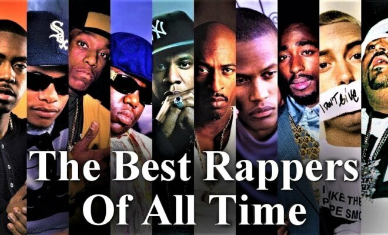10. Kanye West (Ye)
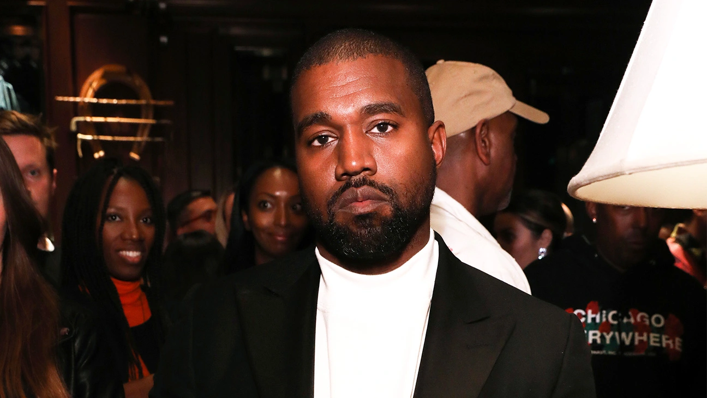Starting in the early ’00s with production on hits for Jay-Z, Beanie Sigel and Talib Kweli, Kanye West moved in front of the mic in 2003 with his solo debut, “Through the Wire,” then scored his first Hot 100 No. 1 alongside Twista and Jamie Foxx on “Slow Jamz.” Then came a torrent of beloved albums (Graduation, 808s & Heartbreak and My Beautiful Dark Twisted Fantasy). While his ascension from producer to artist has been remarkable, West’s quest as a fashion and business mogul, especially with his Yeezy empire, makes him one of the genre’s most impactful pioneers. In the late 2010s, West (legally known as “Ye”) became one of the most divisive artists in the world due to his political views and goading (occasionally outright antagonistic) social comments. From his “Slavery is a choice” remarks in 2018 to his more recent reliance on antisemitic tropes (which began during a troubling global rise in hate crimes against Jewish people), Ye’s fall from grace, amid ongoing reported mental health issues, has sadly been as monumental as his artistic output.
9. Snoop Dogg
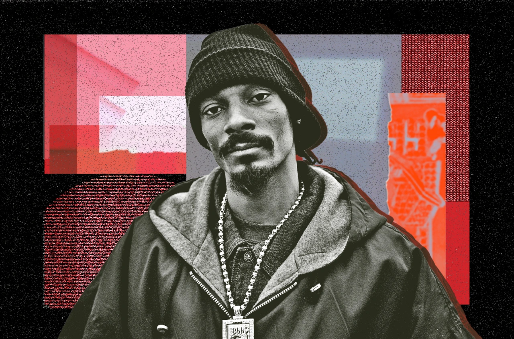 Snoop Doggy Dogg. Snoop Lion. Snoop Dogg. No matter the moniker, there’s no denying Calvin Broadus Jr.’s estimable impact as one of the founding fathers of West Coast and gangsta rap. Alongside mentor Dr. Dre, the lanky Long Beach rapper introduced his ultra-cool demeanor and laid-back flow as the guest on the former’s 1992 debut solo single “Deep Cover.” The Chronic, Dre’s multi-Platinum-certified G-Funk classic (influenced by Parliament-Funkadelic’s psychedelic sound) arrived later that same year, led by one of the pair’s signature anthems, “Nuthin’ But a ‘G’ Thang.” The project was the springboard that rocketed Snoop and G-Funk to the top of the Billboard 200 with his 1993 Death Row Records solo debut, Doggystyle. The Dre-produced set further solidified the West Coast’s status as a major player in the rap game and featured such enduring hits as “Gin and Juice” and “Who Am I? (What’s My Name?)”, among the catchiest singles in hip-hop history.
More seminal, million-plus-selling albums followed, such as Tha Doggfather, Da Game Is to Be Sold, Not to Be Told; R&G (Rhythm and Gangsta): The Masterpiece and Tha Last Meal as Snoop moved on from the G-Funk era to make albums with No Limit, score crossover hits with The Neptunes and even become an early adopter of Auto-Tune. Further showcasing his versatility, the rapper detoured into reggae as Snoop Lion on 2013’s Reincarnated, before reclaiming his Snoop Dogg persona for 2018’s Bible of Love, which debuted at No. 1 on Top Gospel Albums. A serial entrepreneur and activist, Snoop Dogg brought his career full-circle by purchasing his alma mater Death Row in 2022.
8. Drake
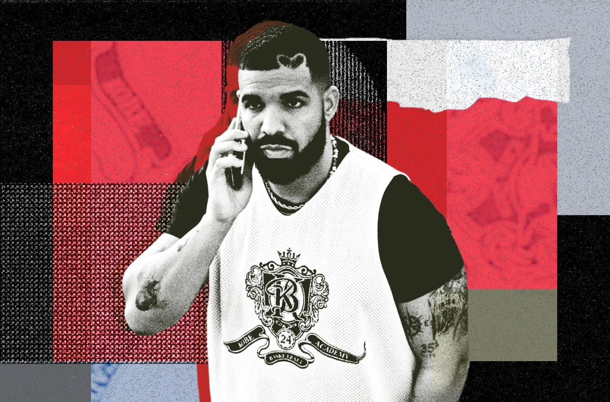Drizzy Drake Rogers forecasted his superstar climb when he was Wheelchair Jimmy on the popular ’00s teenage show Degrassi: The Next Generation. Since his 2009 breakthrough mixtape classic, So Far Gone, Drake’s ability to swerve in and out of genres and mix of sugary crooning with spiky bars made him an untouchable force: Anything he’s graced with his Midas touch has been zapped into platinum and gold.
With his impenetrable streak of commercial success – he’s currently the Hot 100’s all-time hits leader, with nearly 300 entries to his credit – he refuses to give his opposition a breather, consistently releasing projects every calendar year, including generation-defining sets like 2011’s Take Care and 2013’s Nothing Was The Same. Whether he’s crooning his aches and pains on timeless gems (“Marvin’s Room” and “Jaded”) or slashing down hapless MCs (“5 AM in Toronto and “Omerta”), Drake’s virtuosic skillset has made him one of the most gifted (and most accomplished artists to ever touch down in music.
7. Lil Wayne
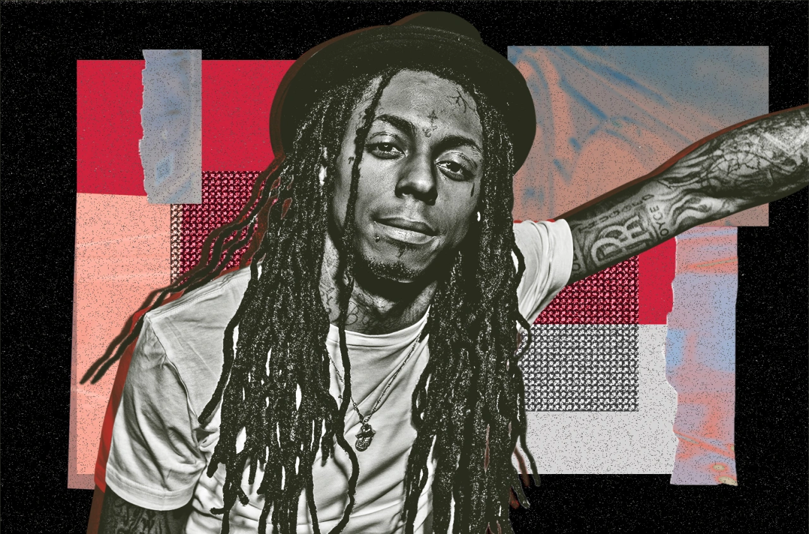“Bring the crowd and I’m loud in living color/ It is Weezy F–kin’ Baby, got these rappers in my stomach,” Lil Wayne opens his 2005 deep cut, “Best Rapper Alive,” foreshadowing the years to come. Wielding words like swords, Wayne is one of the most masterful lyricists of our time, delivering mind-boggling verses for the last quarter century. The former honors student dropped out of school at 14 to focus on his music career, five years after entering the mentorship of Cash Money Records co-founder Birdman. Around that time, Wayne joined The Hot Boys with fellow rappers Juvenile, B.G., and Turk and they topped Billboard’s Top R&B/Hip-Hop Albums chart in 1999 with Guerilla Warfare. It would be the first of twelve chart-topping albums for Wayne, including his iconic Tha Carter series, boasting a plethora of platinum plaques in the process.
With the first-week million-seller Tha Carter III and its smash hits “A Milli” and “Lollipop” in 2008 – the latter of which was his first Hot 100 No. 1, topping the chart for three weeks – Wayne successfully exploded onto the mainstream, setting the stage for rap hopefuls and fellow Billboard all-time chart stars Drake and Nicki Minaj, both of whom Wayne helped develop into the global icons they are today by way of his Young Money/Cash Money record label. But despite the crossover success, Wayne continued to feed his Mixtape Weezy fanbase with cult-favorite series like Da Drought, No Ceilings and Sorry 4 the Wait, and fearlessly reinvented himself with a rap-rock sound via 2010 album Rebirth, which continues to inspire new-school rappers like Lil Uzi Vert and Playboi Carti. Lil Wayne’s cultural, sonic and lyrical influence will forever be embedded into the fabric of hip-hop, by way of his talent as both an artist and as an A&R.
6. The Notorious B.I.G.
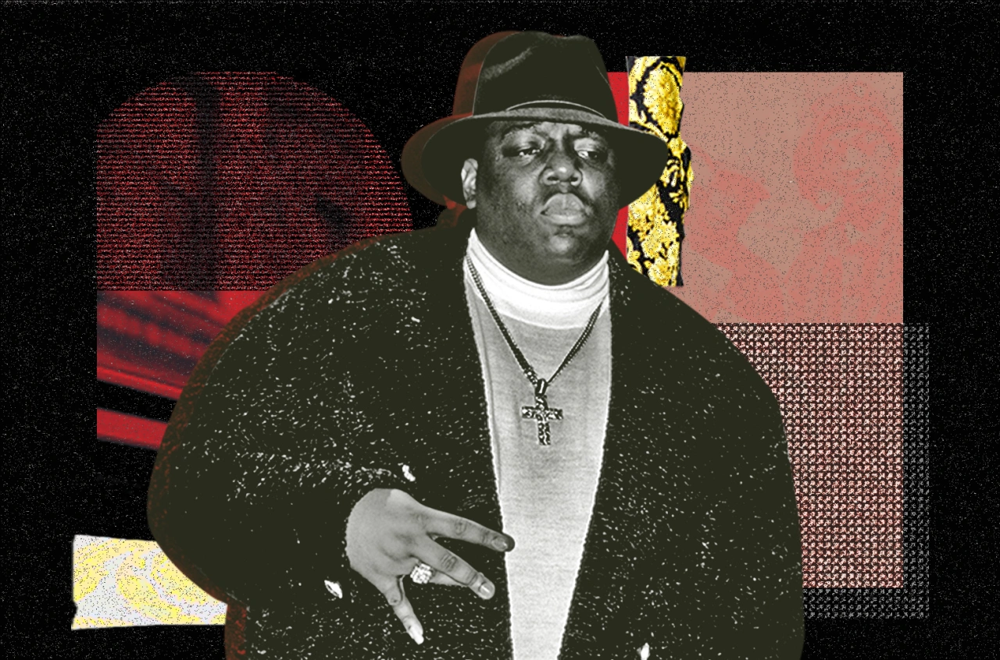Christopher “The Notorious B.I.G.” Wallace is the ultimate rap phenomenon. Starting with 1993’s riotous “Party and Bullshit,” the Brooklyn, New York kingpin later signed with Diddy’s Bad Boy Records. Building a reputation for delivering gritty tales in a laid-back style, accented by deep-toned, rumbling vocals and a signature dark sense of humor, Biggie went on to score 16 Hot 100 hits – including two No. 1s with “Mo’ Money Mo’ Problems” and “Hypnotize.” Big completed two classic solo albums, 1994’s Ready to Die and 1997’s double-disc Life After Death – the latter spending four weeks at No. 1 on the Billboard 200. His executive producer status grew as he created his Junior Mafia clique – writing and producing their 1995 Conspiracy album, then releasing JM breakout star Lil Kim’s Hard Core debut in 1996.
Six months after the death of Tupac Shakur, Biggie was murdered in a drive-by shooting in Los Angeles in 1997. So we’ll never know what the then-24-year-old could have accomplished if he’d been allowed a career as long and as storied as his peers. But through only two studio albums that still resonate nearly 30 years later, Wallace proved that a charismatic big man could mix lyrical street rhymes with heart and humor — and permeate the mainstream with style.
5. Eminem
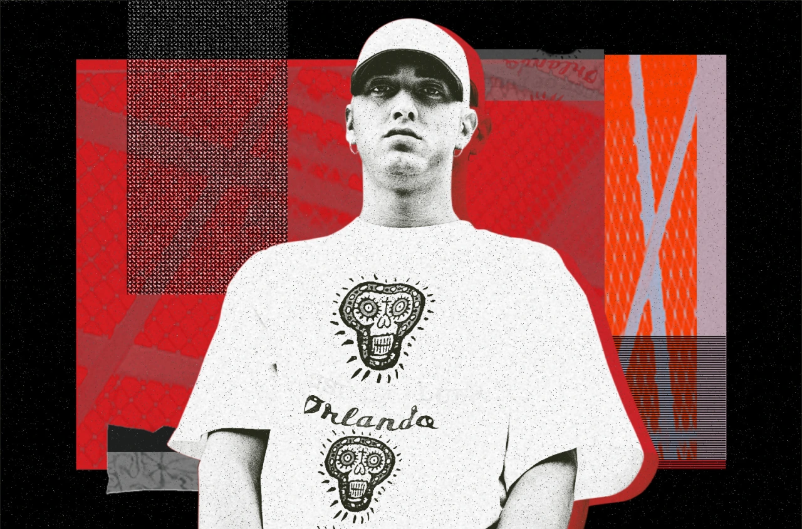After coming up in freestyle rap battles, Eminem has continually wielded the mic as his weapon of choice and obliterated anyone who comes in his path – as seen in the countless feuds he’s engaged in over the years. With unapologetically controversial and macabre (yet frequently hilarious) bars and unparalleled rhyme schemes and syncopation, he’s relished playing the role of rap’s supervillain. Em also certifiably spits a mile a minute, breaking Guinness World Records like fastest rap in a hit single with “Godzilla,” where he rapped 225 words in a 30-second segment.
With 15 Grammy awards, 10 No. 1 Billboard 200 albums and three RIAA-certified Diamond singles (“Lose Yourself,” “Love the Way You Lie” and “Not Afraid”), his unprecedented commercial success makes for one of the most noteworthy rags-to-riches tales in popular music. His award-winning 2002 biographical film 8 Mile even depicted the Detroit-bred MC’s real-life struggle to be accepted as a white rapper in hip-hop, a genre created and dominated by Black people. But with his peerless technical skills, larger-than-life personality and turn-of-the-century run of classic albums, Slim Shady has rightfully earned his spot in the upper echelon of GOAT rappers lists.
4. Tupac
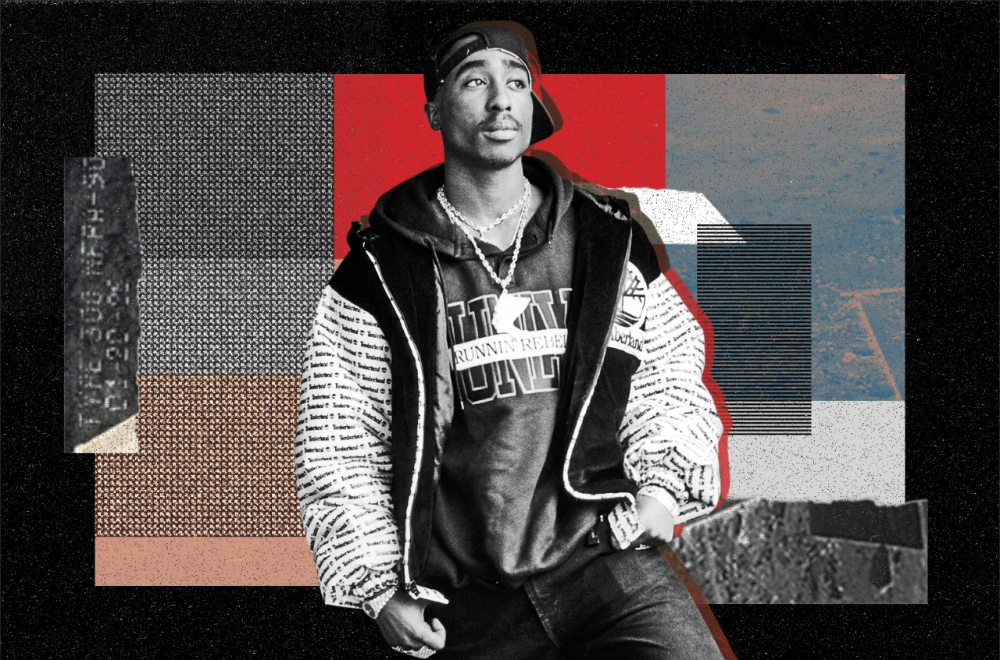Poet, actor, activist, and rapper Tupac Amaru Shakur was the ultimate polymath in the ’90s. Once a tag-along member in Digital Underground, ‘Pac’s larger-than-life demeanor became too big to shelter. after his scene-stealing verse on their 1991 hit “Same Song.” Pac’s duality as a solo artist was remarkable: One minute, he was endearing, scripting empathetic classics like “Dear Mama” and “Keep Your Head Up;” the other, he was explosive, lacing up his war boots, ready to ride on his enemies (“Hit ‘Em Up” and “Hail Mary”). He wasn’t necessarily the best lyricist, nor did he possess the craziest flow. But in fact, his limitations were what made the 25-year-old wunderkind one of the greatest MCs to touch God’s green earth: He knew of his shortcomings, but relied on his voice and motivational messaging to resonate and crack through the toughest gangstas.
Signing to Death Row upon his 1995 prison release formed hip-hop’s strongest triumvirate, with him, Dr. Dre, and a burgeoning Snoop Dogg leading the way. His most potent project came when he released his double-disc album All Eyez On Me the next year. His fourth studio album had the makings of a bonafide classic – with incredible singles (“How Do You Want it,” “California Love,” & “I Ain’t Mad at Cha”) and superior production – and it reigned for eight weeks at No. 1 on the Billboard 200. Despite his gaudy wins, the mercurial MC had his fair share of battles, most notably with Brooklyn titan The Notorious B.I.G, which turned into heartbreaker for both coasts. Their lyrical skirmish ended in tragedy when ‘Pac was shot and killed in a Las Vegas shooting in ‘96, rocking the entire music world. Even after his death, Pac’s legacy pushed forward – with seven posthumous albums (including three Billboard 200-toppers), induction into the Rock Hall of Fame, and even a spot in the Library of Congress’ National Recording Registry (for “Dear Mama”) – and despite his short life and career, Pac’s legacy continues to resonate today as much as any rapper – CL
3. Nas
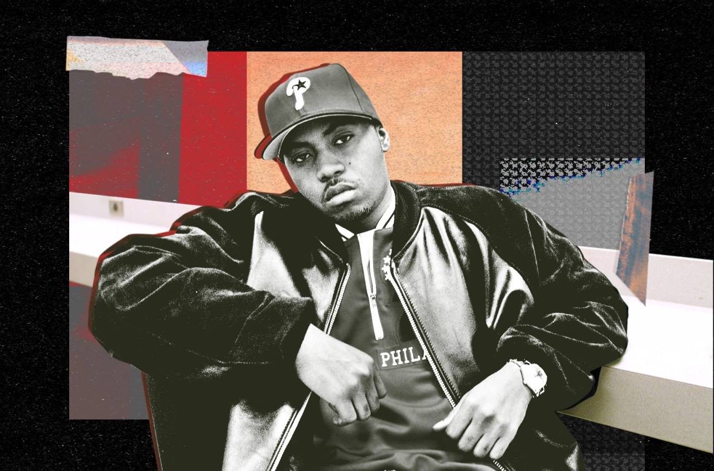At this point, hip-hop purists know Nas’ path to greatness all too well. In 1991, Large Professor tossed him an alley-oop on Main Source’s posse cut “Live at the Barbeque,” and Escobar delivered a rim-rocker of a performance. He was crowned the Chosen One from the jump, and had LeBron-like expectations to overcome. But like King James, he relished the pressure, releasing his seismic debut album Illmatic in 1994 — a quintessential hip-hop opus that transcended the genre and became the Holy Bible for every budding lyricist. To this day, the album remains an undisputed classic, and he continued evolving and staying relevant, scoring No. 1 albums well into the 2010s.
By now, his vivid storytelling (“Black Girl Lost” & “I Gave You Power”) and precocious diction (“Nas Is Like” & “Made You Look”) are goated, and his resiliency has proven to be Hall of Fame-level – especially when he scored a TKO against Jay-Z and added a new verb to the hip-hop lexicon with his scathing comeback diss “Ether” in 2001. Even with those shiny accomplishments, it’s Nasir Jones’ longevity and adaptability that make him a one-of-a-kind specimen. Since partnering with Hit-Boy in 2020 for their first installment of their well-received King’s Disease series, Nas has released three more projects and nabbed his first-ever Grammy, proving his lyrical sword remains as sharp as ever.
2. Kendrick Lamar
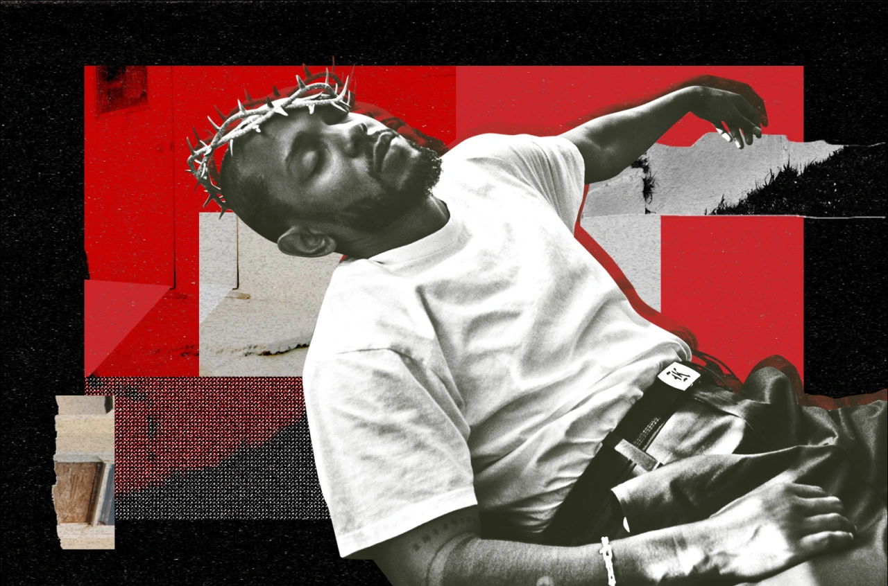The Compton native has become one of music’s most influential artists thanks to his vivid, thought-provoking — and sometimes controversial — lyrics, fearless genre experimentation, and agile-yet-masterful flow. Lamar first gained local attention as teen rapper K.Dot through various mixtapes before releasing his first studio album on indie label Top Dawg Entertainment, 2011’s Section.80. After signing with Dr. Dre’s Interscope imprint Aftermath Entertainment a year later, Lamar hit the ground running with second studio album good kid, m.A.A.d City — becoming an instant creative and cultural force. Signaling a major renaissance in West Coast and gangsta rap, his critically acclaimed sophomore project reeled off several commercial hits: “Swimming Pool” (Drank), “Backseat Freestyle,” and “Bitch, Don’t Kill My Vibe.” Next came 2015’s jazz-influenced To Pimp a Butterfly, his first Billboard 200 No. 1.
The evolution continued with the R&B, psychedelic soul, and pop-infused DAMN. Featuring Lamar’s first solo No. 1 single, “HUMBLE,” the album won the 2018 Pulitzer Prize for Music, the first non-jazz or classical work to do so. That year also marked his major foray into film with the Black Panther the Album. Last year brought Lamar’s final TDE album and latest addition to his conscious rap repertoire, Mr. Morale & the Big Steppers. Now the 17-time Grammy winner (Mr. Morale was just newly crowned as best rap album) and Emmy winner for last year’s Super Bowl halftime show is focusing his entrepreneurial sights on pgLang, his film, TV and music collective that has already scored success with next-gen rapper Baby Keem. Meanwhile, his enduring combination of lyrical prowess, classic albums and envelope-pushing evolution continue to support the widely held consensus that he’s the best rapper of his generation.
1. Jay-Z
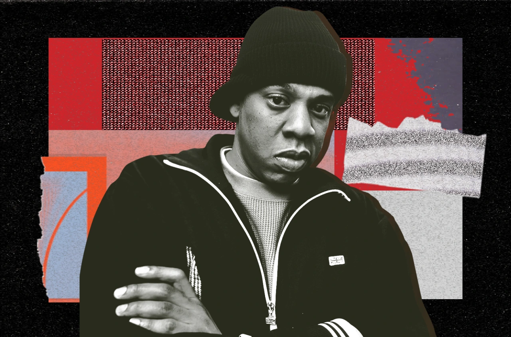“I will not lose.” Brooklyn’s Shawn “Jay-Z” Carter’s defiant-yet-confident declaration has proven true through his legendary career. History is also on his side: Hov has 14 Billboard 200 No. 1 albums (the most amongst solo acts), and over 140 million records sold. He co-founded Roc-A-Fella Records, collected 24 Grammys, ran hip-hop’s legendary Def Jam Records as president, guided Rihanna and Ye to billionaire status, founded a behemoth entertainment/sports agency in Roc Nation and best-selling spirits brands D’usse and Armand de Brignac… and even today, still makes time to drop four-minute long rap verses that break the internet (as he did on DJ Khaled’s “God Did” in 2022). Beyonce Knowles-Carter’s husband has succeeded in every era, spitting regal-scented rhymes that speak to the struggle, and to the opulence that follows an intensely self-made greatness.
The first rapper inducted into the Songwriters Hall of Fame, Jay-Z believes everyone has genius-level talent. Lucky for us, Jay found his early in life, and has since become your favorite rapper’s favorite rapper. Maybe there are other rappers who could claim to match Jay at his peak. But there are simply none who can match his entire career — his longevity, the breadth of his accomplishments, and what he’s meant to hip-hop from a musical, cultural and financial standpoint for the last three decades.